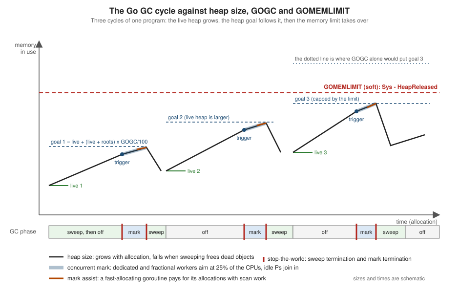

Memory Management and Garbage Collection
|
This content was generated with the assistance of AI and should be verified against the official documentation before being relied on in production. |
This page is written against Go 1.27 (go1.27.2), checked on 2026-10-18; every go.mod shown has the line go 1.27.
Go is a garbage-collected language: you allocate with new, make, composite literals and append, you never free,
and a runtime component reclaims what the program can no longer reach. That removes a whole class of bugs
(use after free, double free) that the C Reference spends
chapters on, and it removes the ownership annotations of
Rust. It does not remove the cost: every heap allocation
takes allocator time, every live pointer is work for the collector, and the collector trades CPU for memory according to
two knobs, GOGC and GOMEMLIMIT. This page explains where values live, how the allocator and the collector work, how
to tune the two knobs, how the Green Tea collector (the default since Go 1.26) and the other recent runtime changes
affect you, how to allocate less, and how to observe all of it.
It builds on Pointers and Value Semantics (stack versus heap
in brief),
Arrays and Slices (capacity growth and retained arrays) and
Maps. The related pages are
unsafe and Low-Level Programming,
Cleanups, Weak Pointers and Interning
(everything that observes object death),
Profiling, Tracing and Diagnostics (heap profiles,
execution traces, exposing metrics),
Performance and PGO,
cgo and C Interoperability (memory the collector does not manage),
Goroutines and the Scheduler,
Sync and Atomics (sync.Pool) and
Benchmarks, Fuzzing and synctest. Other languages make
different choices: see C# memory management and disposal,
Swift ARC and
C++ smart pointers.
Every example was compiled, vetted with go vet, formatted with gofmt and run with Go 1.27.2 on an Apple M5 laptop
(10 cores, macOS, arm64). The output shown is the real output. Many numbers on this page (timings, peak heap sizes, the
number of collections) depend on the machine, the operating system and the moment, so they are labelled as
machine-specific; the shapes (which setting is cheaper, which allocation count is zero) are what to take away. The
go.mod of the example module is:
module example.com/shelf
go 1.27The page follows the official A Guide to the Go Garbage Collector, which describes the collector as of Go 1.19 with later updates, and adds the changes since then: Green Tea, Swiss-table maps, size-specialized allocation and the new compiler stack-allocation optimizations.
The big picture
| Question | Short answer |
|---|---|
Does Go have manual memory management? |
No. There is no |
Is memory allocated on the stack or the heap? |
The compiler decides for every value with escape analysis: it goes on the goroutine stack unless it must outlive the
function call or its size is unknown, in which case it goes on the heap. |
Which collector does Go use? |
A concurrent, non-moving, non-generational, tracing mark-sweep collector. Since Go 1.26 the marking uses the Green Tea design, which scans memory a page at a time. |
Does it stop the program? |
Only for two short stop-the-world pauses per cycle (sweep termination and mark termination); the marking itself runs concurrently, using about 25% of the CPUs, and fast allocators are made to help (mark assist). |
How do I make it use less CPU? |
Allocate less (the biggest lever), or raise |
How do I make it use less memory? |
Lower |
How do I see what it does? |
|
Where values live: stack, heap and escape analysis
Every Go value has to be stored somewhere. The language does not say where: the specification talks about variables and their lifetime and leaves storage to the implementation. The toolchain’s implementation has two places.
-
The goroutine stack holds the local variables, parameters and results of the active function calls. It is allocated and released by moving a pointer when a function is entered and left, so it costs almost nothing and creates no work for the collector.
-
The heap holds everything whose lifetime the compiler cannot bound by a function call. It is managed by the allocator and reclaimed by the garbage collector.
The compiler decides per value, at build time, with escape analysis: if it can prove a value is not referenced after the
function that creates it returns, it stays on the stack; if a reference might outlive the function it escapes to the
heap. The decision is transitive: if a value escapes, anything it points to that is stored in it escapes too. The official
guide lists the typical reasons: a value whose size is not a compile-time constant (the backing array of a slice
sized with a variable), a pointer returned or stored in a longer-lived value, a value converted to an interface that the
compiler cannot follow, and a value captured by a closure that escapes. The details change from release to release;
do not memorise rules, ask the compiler. The shorter treatment in
Pointers and Value Semantics shows testing.AllocsPerRun;
here is the compiler’s own report.
Asking the compiler
package main
import "fmt"
type Book struct {
Title string
ISBN string
Pages int
}
// byValue returns a copy: nothing outlives the call.
//
//go:noinline
func byValue(title string) Book {
return Book{Title: title, Pages: 100}
}
// byPointer returns the address of a local variable: it must escape.
//
//go:noinline
func byPointer(title string) *Book {
b := Book{Title: title, Pages: 100}
return &b
}
// makeBuffer sizes a slice with a variable: the backing array is heap allocated.
//
//go:noinline
func makeBuffer(n int) []byte {
return make([]byte, n)
}
// fixedBuffer uses a constant size that does not leave the function.
//
//go:noinline
func fixedBuffer() int {
buf := make([]byte, 64)
buf[0] = 1
return len(buf)
}
// describe converts a Book to an interface value to print it.
//
//go:noinline
func describe(b Book) {
fmt.Println(b)
}
func main() {
p := byPointer("Dune")
fmt.Println(p.Title, len(makeBuffer(10)), fixedBuffer())
describe(byValue("Emma"))
}The //go:noinline directives keep each function separate so that the report is easy to read (a function that is inlined
into its caller is analysed in the caller’s context). The report is requested with the -m flag of the compiler, passed
through the go command:
go build -gcflags=-m -o /dev/null ./e01# example.com/shelf/e01
e01/main.go:14:14: leaking param: title to result ~r0 level=0
e01/main.go:21:16: leaking param: title
e01/main.go:22:2: moved to heap: b
e01/main.go:30:13: make([]byte, n) escapes to heap
e01/main.go:37:13: make([]byte, 64) does not escape
e01/main.go:45:15: leaking param: b
e01/main.go:46:13: ... argument does not escape
e01/main.go:46:14: b escapes to heap
e01/main.go:51:13: ... argument does not escape
e01/main.go:51:15: p.Title escapes to heap
e01/main.go:51:26: len(makeBuffer(10)) escapes to heap
e01/main.go:51:55: fixedBuffer() escapes to heapgo run ./e01Dune 10 64
{Emma 100}Source: cmd/compile: the -m flag
Reading the report:
-
moved to heap: b(line 22):byPointerreturns&b, so the local variablebcannot live in the frame that is about to disappear.byValuereturns a copy, which is why it is not in the report: nothing about it escapes. -
make([]byte, n) escapes to heap: the size is a variable, so the backing array has no known size and is allocated by the runtime.make([]byte, 64) does not escape: a constant size that never leaves the function stays in the frame. -
leaking param: title: the parameter’s value is stored somewhere that outlives the call (here inside the returned pointer’s target). That is a statement about the caller’s argument: the string header’s data pointer flows to the heap. -
b escapes to heapon line 46 andp.Title escapes to heapon line 51: converting a value to an interface (here to callfmt.Println, whose parameters are...any) boxes it, and the box is a heap allocation unless the compiler can prove the interface value does not outlive the call.... argument does not escapesays the slice that carries the arguments stays on the stack, the boxed values do not.
Asking for -m=2 prints the flow that caused each decision, which is how to find out why something escapes:
e01/main.go:22:2: b escapes to heap in byPointer:
e01/main.go:22:2: flow: ~r0 ← &b:
e01/main.go:22:2: from &b (address-of) at e01/main.go:23:9
e01/main.go:22:2: from return &b (return) at e01/main.go:23:2
e01/main.go:30:13: make([]byte, n) escapes to heap in makeBuffer:
e01/main.go:30:13: flow: ~r0 ← &{storage for make([]byte, n)}:
e01/main.go:30:13: from make([]byte, n) (spill) at e01/main.go:30:13
e01/main.go:30:13: from return make([]byte, n) (return) at e01/main.go:30:2(Lines selected from the -gcflags=-m=2 output of the same program; the format of the report is not a stable interface.)
A few practical rules follow from the reports.
| Pattern | What happens |
|---|---|
Return a struct by value |
No allocation; the result is copied into the caller’s frame. Prefer it for small values. |
Return |
The |
Store a pointer into a package-level variable, a map, a channel or an interface |
The target escapes. |
Pass a value to |
The value is boxed. Small integers, zero-size values and constants are optimised, other values allocate. |
Call a method through an interface or a function value |
The compiler cannot see the callee, so arguments that are pointers are assumed to escape (devirtualization with PGO can help, see Performance and PGO). |
Capture a variable in a closure that is returned or started with |
The captured variable escapes (it is shared by the closure and its creator). |
|
Heap, with the exception described next. |
A very large value (for example a large array) |
Heap: stack frames have a size limit for implicit allocations. |
Goroutine stacks
Every goroutine has its own stack. It starts small and grows by copying: when a function needs more room than is left,
the runtime allocates a stack twice as large, copies the old one over (adjusting the pointers that point into it) and
continues. That is why Go can run hundreds of thousands of goroutines: the first stack is a couple of kilobytes, not the
megabytes an operating-system thread reserves. Because stacks move, a pointer to a stack variable can never be stored in
the heap, which is one of the escape rules above, and why unsafe code must not keep a uintptr to a stack object.
The collector also shrinks stacks that are mostly unused during a cycle, and a goroutine’s stack can be limited with
debug.SetMaxStack (1 GB on 64-bit systems by default, which turns runaway recursion into a fatal stack overflow
instead of exhausting the machine). The /gc/stack/starting-size:bytes metric reports the size new goroutines start with:
since Go 1.19 the runtime adapts it to the average stack size it observes, so a program whose goroutines routinely
use more than 2 KiB starts them bigger and avoids repeated growth.
// Command e09 shows how goroutine stacks are accounted for.
package main
import (
"fmt"
"runtime/metrics"
"sync"
)
func stackBytes() uint64 {
s := []metrics.Sample{{Name: "/memory/classes/heap/stacks:bytes"}}
metrics.Read(s)
return s[0].Value.Uint64()
}
func deep(n int) int {
var pad [128]byte
pad[0] = byte(n)
if n == 0 {
return int(pad[0])
}
return deep(n-1) + int(pad[0])
}
func startingSize() uint64 {
s := []metrics.Sample{{Name: "/gc/stack/starting-size:bytes"}}
metrics.Read(s)
return s[0].Value.Uint64()
}
func main() {
const goroutines = 10_000
fmt.Println("starting stack size:", startingSize(), "bytes")
before := stackBytes()
var ready, release, done sync.WaitGroup
ready.Add(goroutines)
release.Add(1)
done.Add(goroutines)
for range goroutines {
go func() {
defer done.Done()
ready.Done()
release.Wait()
}()
}
ready.Wait()
idle := stackBytes()
fmt.Printf("%d idle goroutines: about %d bytes of stack each\n",
goroutines, (idle-before)/goroutines)
release.Done()
done.Wait()
var ready2, release2, done2 sync.WaitGroup
ready2.Add(goroutines)
release2.Add(1)
done2.Add(goroutines)
for range goroutines {
go func() {
defer done2.Done()
deep(200) // forces the stack to grow
ready2.Done()
release2.Wait()
}()
}
ready2.Wait()
grown := stackBytes()
fmt.Printf("%d goroutines after deep(200): about %d bytes of stack each\n",
goroutines, (grown-before)/goroutines)
release2.Done()
done2.Wait()
}go run ./e09starting stack size: 2048 bytes
10000 idle goroutines: about 2067 bytes of stack each
10000 goroutines after deep(200): about 65925 bytes of stack eachTen thousand parked goroutines take about 20 MB of stack: cheap but not free. Once each of them recursed about 200 frames deep, the stacks had been doubled up to 64 KiB each (machine-independent: the frame size and the doubling rule decide it). A goroutine that is blocked forever keeps its stack, and everything its stack references, alive; see Goroutines and the Scheduler and the goroutine leak profile in Profiling, Tracing and Diagnostics. Stacks are also roots for the collector, covered below, and they are part of the base of the heap-goal formula.
Stack allocation of slices in Go 1.25 to 1.27
A recurring source of garbage is a slice that grows by append and is dropped after use: the backing arrays of size
1, 2, 4, 8 and so on are all heap allocations, and all but the last become garbage immediately. Recent compilers attack
this with three optimizations, described in the blog post
Allocating on the Stack:
-
Variable-size
make(Go 1.25). Formake([]T, 0, n)with a variablen, the compiler reserves a small buffer (32 bytes) in the frame and uses it whennis small enough, otherwise it allocates from the heap as before. -
appendto a slice that does not escape (Go 1.26). The first backing array of a growing slice is a small buffer in the frame, so a slice that stays small never touches the heap. -
appendto a slice that is only returned (Go 1.26). The intermediate arrays use the stack buffer and the final result is moved to the heap once, at the right size.
All three apply only when the compiler can prove that the slice does not escape (or escapes only through the return value).
They are conservative: some uses of the slice are not understood and switch them off. The test below measures
allocations per call on Go 1.27.2 with testing.AllocsPerRun. The element type is int (8 bytes), so the 32-byte buffer
holds four elements.
package alloc
import "testing"
var sinkInts []int
// makeSum sizes the slice with a variable. Go 1.25 and later keep a small
// buffer (32 bytes) on the stack when the requested size fits in it.
//
//go:noinline
func makeSum(n int) int {
buf := make([]int, 0, n)
for i := range 3 {
buf = append(buf, i)
}
total := 0
for _, v := range buf {
total += v
}
return total
}
// appendCount grows a slice that never leaves the function and is only
// measured, so the first backing array can live on the stack.
//
//go:noinline
func appendCount(n int) int {
var s []int
for i := range n {
s = append(s, i)
}
return len(s)
}
// appendEscaping returns the slice, so its final backing array is on the heap.
//
//go:noinline
func appendEscaping(n int) []int {
var s []int
for i := range n {
s = append(s, i)
}
return s
}
func TestAllocs(t *testing.T) {
run := func(name string, f func()) {
t.Logf("%-34s %v allocs", name, testing.AllocsPerRun(100, f))
}
run("make([]int, 0, n) with n=3", func() { makeSum(3) })
run("make([]int, 0, n) with n=4", func() { makeSum(4) })
run("make([]int, 0, n) with n=1000", func() { makeSum(1000) })
run("append x3, never leaves", func() { appendCount(3) })
run("append x4, never leaves", func() { appendCount(4) })
run("append x5, never leaves", func() { appendCount(5) })
run("append x100, never leaves", func() { appendCount(100) })
run("append x3, returned", func() { sinkInts = appendEscaping(3) })
run("append x100, returned", func() { sinkInts = appendEscaping(100) })
}go test -v -run TestAllocs ./e15 main_test.go:48: make([]int, 0, n) with n=3 0 allocs
main_test.go:48: make([]int, 0, n) with n=4 0 allocs
main_test.go:48: make([]int, 0, n) with n=1000 1 allocs
main_test.go:48: append x3, never leaves 0 allocs
main_test.go:48: append x4, never leaves 0 allocs
main_test.go:48: append x5, never leaves 1 allocs
main_test.go:48: append x100, never leaves 5 allocs
main_test.go:48: append x3, returned 1 allocs
main_test.go:48: append x100, returned 5 allocs
--- PASS: TestAllocs (0.00s)
PASS
ok example.com/shelf/e15 0.218sReading the numbers: make with n=3 and n=4 (12 and 32 bytes of capacity) stays in the frame; n=1000 needs the
heap. appendCount(3) and appendCount(4) are zero-allocation, the fifth element forces one heap array, and a
hundred appends cost five allocations (capacities 8, 16, 32, 64 and 128) instead of the eight a plain doubling from 1
would need. appendEscaping(3) costs exactly one allocation, of the exact final size. Two cautions. First, the exact
thresholds are implementation details that can change between releases; treat "small slices that do not escape can be
free" as the rule and verify hot paths with a benchmark. Second, these optimizations are the reason a preallocation
that is "obviously" better can measure the same in a micro-benchmark: measure before and after. If one of them is
suspected of causing trouble, -gcflags=all=-d=variablemakehash=n turns them all off (the release notes name this
switch and the bisect tool for finding the allocation involved), which is also a convenient way to see their effect:
go test -v -run TestAllocs -gcflags=all=-d=variablemakehash=n ./e15 main_test.go:48: make([]int, 0, n) with n=3 1 allocs
main_test.go:48: make([]int, 0, n) with n=4 1 allocs
main_test.go:48: make([]int, 0, n) with n=1000 1 allocs
main_test.go:48: append x3, never leaves 3 allocs
main_test.go:48: append x4, never leaves 3 allocs
main_test.go:48: append x5, never leaves 4 allocs
main_test.go:48: append x100, never leaves 8 allocs
main_test.go:48: append x3, returned 3 allocs
main_test.go:48: append x100, returned 8 allocs(The test output, trimmed to the result lines; the compiler also prints a variablemake triggered line per affected
function while it builds, which is omitted here.)
Source: Go 1.26 release notes: Compiler
The heap allocator
Anything that escapes is allocated by the runtime allocator. Its design descends from TCMalloc (the guide lists the design document among its additional resources) and has the same three levels:
-
a per-processor cache (
mcache), so that a goroutine usually allocates without taking a lock; -
a central list per size class (
mcentral), refilling the caches; -
a global page heap (
mheap) that obtains memory from the operating system in large reservations and carves it into spans, runs of 8 KiB pages.
An allocation of up to 32 KiB (maxSmallSize in the runtime source) is rounded up to one of 68 size classes (class 0 is
the large-object class) and served from a span that holds objects of exactly that size. Spans are separated by whether
their objects contain pointers: a span of noscan objects (strings' bytes, []byte and []int arrays, structs without
pointers) is never scanned by the collector, a scan span is. Allocations larger than 32 KiB get a span of their own.
A tiny allocator packs pointer-free objects smaller than 16 bytes together into a single 16-byte block, which is why a
program can create millions of small strings or boxed integers for little memory but why one tiny object that survives can
keep its 16-byte block alive. The consequence you can see directly: a request for 17 bytes uses a 24-byte slot, a
request for 40 bytes uses 48, one for 72 bytes uses 80.
// Command e08 allocates objects of a few sizes and shows the size classes
// the allocator rounds them up to.
package main
import (
"fmt"
"runtime"
"unsafe"
)
// Each type starts with a pointer so the allocator cannot use the tiny
// allocator for pointer-free data.
type obj17 struct {
p *int
b [9]byte
}
type obj40 struct {
p *int
b [32]byte
}
type obj70 struct {
p *int
b [62]byte
}
var sink [][]any
func measure[T any](name string) {
const n = 100_000
items := make([]*T, n)
var before, after runtime.MemStats
runtime.GC()
runtime.ReadMemStats(&before)
for i := range items {
items[i] = new(T)
}
runtime.ReadMemStats(&after)
var zero T
fmt.Printf("%-6s sizeof=%2d bytes, heap used per object=%3d bytes\n",
name, unsafe.Sizeof(zero), (after.HeapAlloc-before.HeapAlloc)/n)
runtime.KeepAlive(items)
}
func main() {
measure[obj17]("obj17")
measure[obj40]("obj40")
measure[obj70]("obj70")
var ms runtime.MemStats
runtime.ReadMemStats(&ms)
fmt.Print("size classes (bytes):")
for _, c := range ms.BySize[:14] {
fmt.Print(" ", c.Size)
}
fmt.Println(" ...")
}go run ./e08obj17 sizeof=24 bytes, heap used per object= 24 bytes
obj40 sizeof=40 bytes, heap used per object= 48 bytes
obj70 sizeof=72 bytes, heap used per object= 80 bytes
size classes (bytes): 0 8 16 24 32 48 64 80 96 112 128 144 160 176 ...Source: runtime: MemStats.BySize
(The first column of the size-class list is the unused class 0. Each type starts with a pointer so that the pointer-free
tiny allocator does not take part; the measurement divides the growth of HeapAlloc by the number of objects.)
The practical use of size classes: a struct that is a few bytes over a class boundary wastes the difference in every instance, and reordering fields can move it down a class (see Structs and Embedding for padding and layout, and the struct-layout notes in Performance and PGO).
Size-specialized allocation (Go 1.27)
Since Go 1.27 the compiler generates calls to size-specialized allocation routines for small objects (80 bytes or
less): instead of one general mallocgc that must branch on size and pointer-ness, there is one tiny function per
combination of size class and noscan/scan, with the common case straight-line. The release notes put the gain at up to
30% for the cheapest small allocations, about 1% for real allocation-heavy programs, at a cost of roughly 60 KB of binary
size; the blog post
Size-Specialized Memory Allocation explains the design. You may switch it
off for a build with GOEXPERIMENT=nosizespecializedmalloc, an opt-out that the release notes say is expected to be
removed in Go 1.28. The benchmark below allocates objects of four sizes and was run both ways:
package smallalloc
import "testing"
type node16 struct {
next *node16
v int
}
type node48 struct {
a, b, c, d, e *int
f int
}
type node80 struct {
p [9]*int
n int
}
type big struct{ p [64]*int }
var (
sink16 *node16
sink48 *node48
sink80 *node80
sinkBg *big
)
func BenchmarkNew(b *testing.B) {
b.Run("16B", func(b *testing.B) {
for b.Loop() {
sink16 = new(node16)
}
})
b.Run("48B", func(b *testing.B) {
for b.Loop() {
sink48 = new(node48)
}
})
b.Run("80B", func(b *testing.B) {
for b.Loop() {
sink80 = new(node80)
}
})
b.Run("512B", func(b *testing.B) {
for b.Loop() {
sinkBg = new(big)
}
})
}go test -bench New -benchtime=500ms -run '^$' ./e17
GOEXPERIMENT=nosizespecializedmalloc go test -bench New -benchtime=500ms -run '^$' ./e17BenchmarkNew/16B-10 57477457 12.12 ns/op
BenchmarkNew/48B-10 35650534 17.30 ns/op
BenchmarkNew/80B-10 25595221 23.15 ns/op
BenchmarkNew/512B-10 4543778 138.0 ns/opBenchmarkNew/16B-10 31283060 20.08 ns/op
BenchmarkNew/48B-10 24890756 24.26 ns/op
BenchmarkNew/80B-10 19992918 29.32 ns/op
BenchmarkNew/512B-10 5286535 116.7 ns/op(The first block is the default, the second the opt-out. Machine-specific and noisy, as every micro-benchmark is: the small sizes are clearly faster with the specialized routines, the 512-byte class is above the 80-byte threshold and the difference between the two runs there is noise. Do not expect these gains in a whole program.)
The tracing garbage collector
Go’s collector is a tracing collector: it decides what is garbage by finding what is live and treating the rest as dead. The definitions come from the guide:
-
An object is a dynamically allocated piece of memory that contains one or more Go values.
-
A pointer is a memory address that references a value inside an object. Pointers include
*T, and also the parts of built-in values that hold addresses: strings, slices, channels, maps and interface values all contain pointers the collector must follow. -
Objects and the pointers between them form the object graph. The collector walks it from the roots: global variables and the local variables on goroutine stacks. Walking is called scanning; an object that scanning can reach is reachable, and all other objects are garbage. (There is one exception, a finalized object can be resurrected, see Cleanups, Weak Pointers and Interning.)
The collector uses the mark-sweep technique: during mark it walks the graph and sets a mark on everything it reaches,
during sweep it walks the heap and makes every unmarked slot available for allocation again. It is non-moving (objects
never change address, which is what makes unsafe and cgo pointers practical, and why the heap can fragment) and
non-generational (young and old objects are treated alike; there is no minor collection). A moving, compacting collector
could remove fragmentation and make allocation a pointer bump, and a generational one could scan less; Go has chosen a
simple non-moving design with concurrency, the sub-millisecond pauses of which are the headline feature.
The cycle
Because Go’s collector is mark-sweep, it works in phases, and it is concurrent: most of the work runs while your goroutines keep running. The guide describes the cycle as a rotation through sweeping, off and marking, and the runtime source adds the two short stop-the-world steps between them:
-
Sweep termination (stop-the-world). All goroutines are stopped briefly, any sweeping left from the previous cycle is finished, the write barrier is switched on and the mark phase is prepared. The duration is a matter of tens of microseconds: mostly the time to stop the running goroutines.
-
Concurrent mark. Background workers scan the roots and walk the graph while the program runs. The runtime targets 25% of
GOMAXPROCSfor the workers (dedicated workers that take a whole P, fractional workers that take part of one) and idle Ps join in for free (idle workers). A goroutine that allocates faster than the collector can mark must assist: the allocation is charged scan work, which is how the runtime keeps the heap from running far past its goal. Pointer writes during this phase go through the write barrier, which records pointers so that nothing reachable is missed (Go uses a hybrid of the Yuasa and Dijkstra barriers, introduced in Go 1.8, so that goroutine stacks do not need to be rescanned). -
Mark termination (stop-the-world). The collector checks it is done, switches the write barrier off and computes the next heap goal. Again a short pause.
-
Concurrent sweep. Unmarked objects are released. Sweeping is lazy: spans are swept by the allocator when it needs them and by a background sweeper, which is why allocation after a cycle can be slightly more expensive.
-
Off. The heap grows by allocation until it reaches the trigger for the next cycle.

The figure shows three cycles of one program. The heap goal of each cycle is computed from the live heap found by the
previous one; the trigger is slightly below the goal so that the concurrent mark can finish before the heap reaches it. In the
third cycle GOGC alone would put the goal above the memory limit, so the limit takes over and the cycles get closer together.
| Phase | Runs | Costs the program |
|---|---|---|
Sweep termination |
stop-the-world, very short |
a pause proportional to the time to stop goroutines (a few tens of microseconds typically) |
Mark |
concurrent, about 25% of the CPUs plus idle Ps |
CPU taken from the program, write-barrier overhead on pointer writes, assists for fast allocators, goroutines suspended one at a time to scan their stacks |
Mark termination |
stop-the-world, very short |
a short pause |
Sweep |
concurrent and lazy |
a little work in the allocator and in a background goroutine |
The stop-the-world pauses do not grow with the size of the heap (the work that does grow with it is done concurrently), and they
are visible to the program through the /sched/pauses/total/gc:seconds metric and the execution trace. Since Go 1.14 goroutines are
preempted asynchronously, which also stops a tight loop from delaying a stop-the-world indefinitely (Goroutines and the Scheduler).
What the collector scans
The cost of a mark phase is proportional to the pointers in the live heap, not to its size in bytes: the collector must visit
every pointer, and a span of pointer-free objects is skipped entirely. So the same number of bytes costs far more to the
collector as many small pointer-linked objects than as one large pointer-free array. The program below keeps two million
records alive, once as one []Loan (a single object, no pointers) and once as []*Loan (two million objects), and times a
forced collection:
// Command e07 builds one million small records twice: as a slice of values
// and as a slice of pointers, and times a forced collection for each.
package main
import (
"fmt"
"runtime"
"time"
)
type Loan struct {
BookID int64
MemberID int64
Due int64
}
func timeGC() time.Duration {
start := time.Now()
runtime.GC()
return time.Since(start)
}
func main() {
const n = 2_000_000
values := make([]Loan, n)
for i := range values {
values[i] = Loan{BookID: int64(i), MemberID: 1, Due: 2}
}
runtime.GC() // settle
d := timeGC()
fmt.Printf("[]Loan (1 object, no pointers): GC took %v\n", d.Round(100*time.Microsecond))
runtime.KeepAlive(values)
values = nil
ptrs := make([]*Loan, n)
for i := range ptrs {
ptrs[i] = &Loan{BookID: int64(i), MemberID: 1, Due: 2}
}
runtime.GC()
d = timeGC()
fmt.Printf("[]*Loan (%d objects, pointers): GC took %v\n", n, d.Round(100*time.Microsecond))
runtime.KeepAlive(ptrs)
}go run ./e07[]Loan (1 object, no pointers): GC took 100µs
[]*Loan (2000000 objects, pointers): GC took 4.2ms(Machine-specific: the []*Loan collection took tens of times longer. The records are the same 24 bytes either way.)
This is the main reason the Go style prefers values, slices of structs and indexes to pointer-rich structures when performance
matters, and why a cache of millions of entries with pointers inside can dominate the collector’s time while a flat layout does not.
It is also why sorting out pointer-free representations (a []byte instead of a []string, parallel slices of numbers
instead of a slice of pointers) is the first move when profiles show the collector at the top.
The cost model, GOGC and the heap goal
The guide builds a cost model on three axioms, and it is the key to every tuning decision:
-
The collector uses two resources: physical memory and CPU time.
-
Its memory cost for a cycle is the live heap of the previous cycle plus the new heap allocated since; sweeping and metadata are small.
-
Its CPU cost for a cycle is a fixed cost plus a marginal cost proportional to the live heap (the pointers in it). Sweeping is modelled as free; it is far cheaper than marking.
The total CPU cost therefore depends on how often the collector runs, and that is the trade-off: collect less often and you pay less CPU and more memory, collect more often and the reverse. The guide gives an example with made-up numbers: an application that allocates 10 MiB per second, a live heap of 10 MiB and a scan rate of 100 MiB per CPU-second. A cycle every CPU-second means a 20 MiB heap and 10% CPU overhead; a cycle every two seconds means a 30 MiB heap and 5% overhead: half the CPU for 50% more memory.
GOGC sets the point on this curve. After each cycle the runtime computes the heap goal:
heap goal = live heap + (live heap + GC roots) * GOGC / 100where the roots are the scannable goroutine stacks and global variables (they were added to the formula in Go 1.18). With the default
GOGC=100 the heap is allowed to double over the live heap plus roots before the next cycle ends: with an 8 MiB live heap, 1 MiB
of stacks and 1 MiB of globals the next cycle ends after another 10 MiB of allocation (an 18 MiB footprint); GOGC=50 allows 5 MiB, GOGC=200
allows 20 MiB. The rule of thumb in the guide: doubling GOGC doubles the heap overhead and roughly halves the collector’s CPU cost, and vice versa.
The goal is a target, not a limit: a large allocation can overshoot it, and the actual trigger is a little earlier.
A minimum applies: the heap goal is never below 4 MiB at GOGC=100 (scaled by GOGC), which is why small programs show a
"4 MB goal" in a trace. (The runtime has an off-by-default experiment, heapminimum512kib, that lowers the floor to 512 KiB; it is a diagnostic,
not a tuning knob.) GOGC is read from the environment at start, and debug.SetGCPercent changes it at run time and returns the previous value;
GOGC=off, or SetGCPercent(-1), disables the proportional trigger entirely (the memory limit, below, still applies).
The program below allocates a steady 32 MiB of live data and then 375 MiB of short-lived garbage in 128 KiB pieces. It reports the number of collections, the peak heap seen and the collector’s share of CPU, and the settings in effect:
// Command e02 allocates a steady live heap plus short-lived garbage and
// reports what the collector did. Run it with different GOGC and GOMEMLIMIT
// values to see the trade-off.
package main
import (
"fmt"
"runtime"
"runtime/debug"
)
const (
liveChunks = 32 // 32 chunks of 1 MiB stay reachable
chunkSize = 1 << 20 // 1 MiB
churnChunks = 3000 // 3000 short-lived chunks of 128 KiB
churnSize = 128 << 10 // 128 KiB
)
func main() {
live := make([][]byte, liveChunks)
for i := range live {
live[i] = make([]byte, chunkSize)
live[i][0] = byte(i)
}
var peak uint64
var ms runtime.MemStats
sink := 0
for i := range churnChunks {
garbage := make([]byte, churnSize)
garbage[0] = byte(i)
sink += int(garbage[0])
if i%10 == 0 {
runtime.ReadMemStats(&ms)
peak = max(peak, ms.HeapAlloc)
}
}
runtime.ReadMemStats(&ms)
gogc := debug.SetGCPercent(100)
debug.SetGCPercent(gogc)
gogcText := fmt.Sprint(gogc)
if gogc < 0 {
gogcText = "off"
}
limit := debug.SetMemoryLimit(-1)
if limit == 1<<63-1 {
fmt.Printf("GOGC=%s, no memory limit\n", gogcText)
} else {
fmt.Printf("GOGC=%s, memory limit %d MiB\n", gogcText, limit>>20)
}
fmt.Printf("live heap about %d MiB, garbage allocated %d MiB\n",
liveChunks*chunkSize>>20, churnChunks*churnSize>>20)
fmt.Printf("collections=%d peak heap=%d MiB gc cpu=%.1f%%\n",
ms.NumGC, peak>>20, ms.GCCPUFraction*100)
runtime.KeepAlive(live)
_ = sink
}Source: runtime/debug: SetGCPercent
Running it with different settings (build once with go build -o e02 ./e02):
env GOGC=100 ./e02
env GOGC=50 ./e02
env GOGC=400 ./e02
env GOGC=off ./e02$ env GOGC=100 ./e02
GOGC=100, no memory limit
collections=15 peak heap=68 MiB gc cpu=2.9%
$ env GOGC=50 ./e02
GOGC=50, no memory limit
collections=29 peak heap=50 MiB gc cpu=5.0%
$ env GOGC=400 ./e02
GOGC=400, no memory limit
collections=4 peak heap=163 MiB gc cpu=0.6%
$ env GOGC=off ./e02
GOGC=off, no memory limit
collections=0 peak heap=406 MiB gc cpu=0.0%The same program under a soft memory limit (next section):
env GOMEMLIMIT=48MiB ./e02
env GOGC=off GOMEMLIMIT=96MiB ./e02
env GOGC=off GOMEMLIMIT=48MiB ./e02$ env GOMEMLIMIT=48MiB ./e02
GOGC=100, memory limit 48 MiB
collections=50 peak heap=41 MiB gc cpu=6.1%
$ env GOGC=off GOMEMLIMIT=96MiB ./e02
GOGC=off, memory limit 96 MiB
collections=7 peak heap=86 MiB gc cpu=1.2%
$ env GOGC=off GOMEMLIMIT=48MiB ./e02
GOGC=off, memory limit 48 MiB
collections=50 peak heap=42 MiB gc cpu=5.7%| Setting | Collections | Peak heap | GC CPU | Reading |
|---|---|---|---|---|
|
29 |
50 MiB |
5.0% |
smaller heap, about twice the collections |
|
15 |
68 MiB |
2.9% |
about twice the live heap |
|
4 |
163 MiB |
0.6% |
far fewer collections, a much larger heap |
|
0 |
406 MiB |
0% |
the whole 375 MiB of garbage is kept; do not do this without a limit |
|
50 |
41 MiB |
6.1% |
the limit, not |
|
7 |
86 MiB |
1.2% |
collect only when the limit is near |
The lesson is the shape of the curve, not the numbers (machine-specific: the live heap, the allocation size and the
number of cores decide them): lower GOGC buys memory with CPU, higher GOGC buys CPU with memory, and the memory limit changes the rule
from "a multiple of the live heap" to "the least collection that stays under a ceiling".
GOMEMLIMIT: the soft memory limit
Until Go 1.19 GOGC was the only knob, and it had a flaw: it scales with the live heap but knows nothing about how much memory
exists. A service that is usually at 100 MiB live and occasionally spikes to 600 MiB had to run with GOGC low enough that the
spike would not exceed the container, even though the usual case could afford far more, and a rare spike could still run it out
of memory. Go 1.19 added the soft memory limit, set with the GOMEMLIMIT environment variable or debug.SetMemoryLimit.
GOMEMLIMIT=450MiB # a number of bytes with an optional unit: B, KiB, MiB, GiB, TiB (powers of two)The limit covers everything the Go runtime manages: the heap, the stacks, runtime metadata, and memory it has mapped but not
released. The runtime documents the exact quantity: runtime.MemStats.Sys - runtime.MemStats.HeapReleased, or equivalently
/memory/classes/total:bytes - /memory/classes/heap/released:bytes in runtime/metrics. It does not cover the binary’s own mappings,
memory allocated by C code, memory from syscall.Mmap or memory the kernel holds for the process (page tables, socket buffers).
How the limit works:
-
The collector lowers the heap goal so that the total stays under the limit, running more often as the live heap approaches it, and the runtime returns memory to the operating system more aggressively.
-
It composes with
GOGC: the smaller of the two goals wins. SoGOGC=offwithGOMEMLIMIT=96MiBmeans "do not collect until the limit is near", the maximum-economy configuration (the 7-collection row above). -
It is soft. If the live heap itself exceeds the limit, collecting harder cannot help, and a collector that runs continuously would stall the program: this is thrashing, and it is worse than an out-of-memory kill because it is slow and silent. To prevent it the runtime caps the GC CPU utilization at about 50% (over a window of two
GOMAXPROCS-seconds of CPU, with some hysteresis); above that the collector is delayed and the heap is allowed to pass the limit. A misconfigured limit therefore slows the program by about a factor of two at worst. The/gc/limiter/last-enabled:gc-cyclemetric says when the limiter last kicked in, which is useful when diagnosing an out-of-memory kill. -
Small limits, of the order of tens of megabytes, are less reliably respected than limits of hundreds of megabytes or more, because of scheduling latencies outside the collector’s control.
You can see thrashing with the program above: with GOGC=off and a limit barely above the 32 MiB of live data, the program collects hundreds of times
where GOGC=100 needed 15:
env GOGC=off GOMEMLIMIT=40MiB ./e02
env GOGC=off GOMEMLIMIT=33MiB ./e02$ env GOGC=off GOMEMLIMIT=40MiB ./e02
GOGC=off, memory limit 40 MiB
collections=411 peak heap=34 MiB gc cpu=13.0%
$ env GOGC=off GOMEMLIMIT=33MiB ./e02
GOGC=off, memory limit 33 MiB
collections=626 peak heap=35 MiB gc cpu=14.2%(Machine-specific numbers, the shape is the point: the collection count is between 25 and 40 times higher than at the default. On this program the limiter’s cap is not reached because there is little to scan; a program with a larger pointer-heavy live heap would hit the 50% cap.)
Using the limit well
The guide’s advice, in practice:
-
Do use a limit when you control the environment and the Go program is the only user of a memory reservation: a service in a container. Leave 5% to 10% of headroom below the container limit for memory the runtime cannot see (cgo allocations, the binary mappings, kernel buffers). A container limit of 512 MiB suggests a Go limit of about 460 MiB.
-
Do adjust it at run time when conditions change, for example around a cgo call that temporarily needs a lot of C memory.
-
Do not set
GOGC=offtogether with a limit when the program shares limited memory with other, decoupled programs: keep the limit as a safety net and a modestGOGCfor the usual case. -
Do not bake a limit into software you ship to environments you do not control (a command-line tool, a desktop program): a limit that is wrong for the user’s machine causes confusing slowdowns, and an advanced user can set
GOMEMLIMITthemselves. -
Do not use the limit to avoid out-of-memory kills in a program that is already close to its environment’s limit: it replaces a quick failure with a slow degradation. Raise the limit of the environment, or lower
GOGC.
Go does not read the container limit for you. (GOMAXPROCS does follow the container’s CPU bandwidth limit since Go 1.25, but the memory limit is
left to you; community modules that derive GOMEMLIMIT from the cgroup limit exist, and the program below shows how little it takes without one.)
A service can compute the limit from its configuration at start:
// Command e10 derives a memory limit from the memory the container is
// allowed to use and applies it with runtime/debug.
package main
import (
"fmt"
"math"
"os"
"runtime/debug"
"strconv"
)
// limitFromEnv leaves 10% headroom for memory the Go runtime does not manage
// (C allocations, the binary mappings, kernel buffers).
func limitFromEnv(name string) (int64, bool) {
v, ok := os.LookupEnv(name)
if !ok {
return 0, false
}
total, err := strconv.ParseInt(v, 10, 64)
if err != nil || total <= 0 {
return 0, false
}
return total / 10 * 9, true
}
func main() {
if limit, ok := limitFromEnv("SHELFD_CONTAINER_MEMORY_BYTES"); ok {
prev := debug.SetMemoryLimit(limit)
fmt.Printf("memory limit: %d MiB (was %d)\n", limit>>20, prev)
} else {
fmt.Println("memory limit: unchanged")
}
// SetMemoryLimit(-1) reads the current value without changing it.
cur := debug.SetMemoryLimit(-1)
// SetGCPercent returns the previous value; restore it straight away to
// read the current setting.
pct := debug.SetGCPercent(100)
debug.SetGCPercent(pct)
if cur == math.MaxInt64 {
fmt.Printf("GOGC=%d, no limit\n", pct)
return
}
fmt.Printf("GOGC=%d, limit=%d MiB\n", pct, cur>>20)
}go run ./e10
SHELFD_CONTAINER_MEMORY_BYTES=536870912 go run ./e10$ go run ./e10
memory limit: unchanged
GOGC=100, no limit
$ SHELFD_CONTAINER_MEMORY_BYTES=536870912 go run ./e10
memory limit: 460 MiB (was 9223372036854775807)
GOGC=100, limit=460 MiBSource: runtime/debug: SetMemoryLimit
(The variable name is made up for the shelf service; in a deployment the value would come from the container spec, for example
through the Kubernetes downward API. SetMemoryLimit(-1) reads the limit without changing it, and SetGCPercent returns the previous value, so the program
restores it immediately to read it.) A deployment that sets the limit in the environment instead looks like this (a fragment, not
run here; see The go Command, Builds and Cross-Compilation
and the Kubernetes pages on resource management for the surrounding manifest):
containers:
- name: shelfd
image: registry.example.com/shelf/shelfd:1.0.0
resources:
limits:
memory: 512Mi
env:
- name: GOMEMLIMIT
value: 450MiBReading GODEBUG=gctrace=1
The environment variable GODEBUG=gctrace=1 makes the runtime print one line per collection to standard error. It is the quickest way
to see what the collector is doing without touching code. This is the beginning of the output of the e02 program above at the
default settings (machine-specific):
GODEBUG=gctrace=1 ./e02gc 1 @0.000s 8%: 0.024+0.11+0.004 ms clock, 0.24+0/0.18/0.037+0.048 ms cpu, 4->4->4 MB, 4 MB goal, 0 MB stacks, 0 MB globals, 10 P
gc 2 @0.000s 12%: 0.036+0.061+0.004 ms clock, 0.36+0.022/0.10/0.001+0.042 ms cpu, 9->9->9 MB, 9 MB goal, 0 MB stacks, 0 MB globals, 10 P
gc 3 @0.000s 12%: 0.020+0.070+0.003 ms clock, 0.20+0.016/0.087/0.006+0.039 ms cpu, 18->18->18 MB, 18 MB goal, 0 MB stacks, 0 MB globals, 10 P
gc 4 @0.000s 12%: 0.016+0.090+0.016 ms clock, 0.16+0.020/0.067/0.012+0.16 ms cpu, 35->36->32 MB, 36 MB goal, 0 MB stacks, 0 MB globals, 10 P
gc 5 @0.002s 7%: 0.014+0.14+0.019 ms clock, 0.14+0.013/0.099/0.013+0.19 ms cpu, 63->64->33 MB, 65 MB goal, 0 MB stacks, 0 MB globals, 10 P
gc 6 @0.004s 4%: 0.013+0.10+0.015 ms clock, 0.13+0.015/0.10/0.024+0.15 ms cpu, 65->66->32 MB, 67 MB goal, 0 MB stacks, 0 MB globals, 10 PThe line format is documented in the runtime package and is explicitly subject to change. Reading gc 5:
| Field | Meaning (and the matching runtime/metrics name where there is one) |
|---|---|
|
the number of the collection, counted from program start |
|
time since program start |
|
percentage of time spent in the collector since program start |
|
wall-clock times of sweep termination (stop-the-world), concurrent mark and scan, and mark termination (stop-the-world) |
|
CPU times: sweep termination, then mark as assist time, background time and idle time, then mark termination |
|
heap size when the collection started, when it ended, and the live heap it found ( |
|
the heap goal ( |
|
the scannable stack and global sizes ( |
|
the number of processors used ( |
What to read from it: the first line’s 4 MB goal is the heap minimum; in lines 1 to 4 the live heap doubles, each time the goal is the live heap at
the end of the previous cycle times two (the formula above); from gc 5 on the live heap is steady at about 32 MiB and the goal settles at
about twice that. A line ending in (forced) was started by runtime.GC(). A very large assist share (the first CPU figure inside the mark group) says the program allocates faster than the
collector can mark; a large percentage on the left says the collector is the bottleneck. GODEBUG=gcpacertrace=1 prints the pacer’s internal
state in addition, which is mostly useful to the runtime developers.
The Green Tea collector (Go 1.25 experiment, default in Go 1.26)
Marking is a graph walk, and the classic algorithm walks it object by object, from a work list that behaves like a stack. That is simple and works, but it hops all over memory: scanning one small object, then another on a different page, then another elsewhere, spends most of its time waiting for cache misses. The Go team’s measurements put 20% or more of CPU time in the collector for some programs, and most of that is memory stalls.
Green Tea (the name of the blog post’s design, available in Go 1.25 with GOEXPERIMENT=greenteagc and the default since Go 1.26) keeps the algorithm
but changes the unit of work: the work list tracks spans (runs of 8 KiB pages holding same-sized objects) rather than individual objects, and the
list behaves like a queue. A page is put on the queue when the first pointer into it is found, and objects that are found meanwhile are only marked as seen; when the
page comes off the queue, all the seen-but-not-yet-scanned objects on it are scanned in one sweep through the page, in address order. The collector keeps two bits per object
(seen and scanned), so a page can come back to the queue and only the newly seen objects are scanned. Visiting many objects of a page together improves cache use and
makes the metadata easy to process in bulk: on recent x86-64 processors Go 1.26 adds vector acceleration (AVX-512 with the Galois-field instructions) that processes the metadata of a page in a few instructions.
What it means for you:
-
Nothing to change. The language, the API and the tuning knobs are the same.
GOGC,GOMEMLIMIT, the metrics and the trace look as before. -
The Go 1.26 release notes expect a 10% to 40% reduction in collector overhead in programs that use it heavily; the blog says the modal improvement is about 10%. A program that spends 10% of its CPU in the collector would save 1% to 4% overall.
-
Workloads whose heaps are irregular (a single object per page to scan at a time) may see no gain or a small regression. The implementation has a fast path for pages with a single object to scan.
-
You can opt out at build time with
GOEXPERIMENT=nogreenteagcto compare. The release notes treat the opt-out as a stop-gap; it is expected to go away.
The program below builds a tree of about 8 million two-pointer nodes that stays alive, plus a stream of short-lived trees, which is exactly the pointer-heavy shape the collector spends its time on, and reports the collector’s CPU share:
// Command e14 builds a binary tree of small nodes: a pointer-heavy workload
// that makes the collector work hard. Run it with different GOEXPERIMENT
// values to compare collectors.
package main
import (
"fmt"
"runtime"
"time"
)
type node struct{ left, right *node }
func build(depth int) *node {
if depth == 0 {
return &node{}
}
return &node{left: build(depth - 1), right: build(depth - 1)}
}
func count(n *node) int {
if n == nil {
return 0
}
return 1 + count(n.left) + count(n.right)
}
func main() {
start := time.Now()
long := build(22) // about 8 million nodes stay live
total := 0
for range 40 {
total += count(build(16)) // short-lived trees
}
var ms runtime.MemStats
runtime.ReadMemStats(&ms)
fmt.Printf("nodes=%d long=%d collections=%d gc-cpu=%.1f%% wall=%v\n",
total, count(long), ms.NumGC, ms.GCCPUFraction*100, time.Since(start).Round(time.Millisecond))
}go build -o e14 ./e14
GOEXPERIMENT=nogreenteagc go build -o e14_old ./e14
for i in 1 2 3; do ./e14; done
for i in 1 2 3; do ./e14_old; donenodes=5242840 long=8388607 collections=7 gc-cpu=7.9% wall=227ms
nodes=5242840 long=8388607 collections=7 gc-cpu=7.4% wall=244ms
nodes=5242840 long=8388607 collections=7 gc-cpu=7.3% wall=283ms
nodes=5242840 long=8388607 collections=6 gc-cpu=13.8% wall=340ms
nodes=5242840 long=8388607 collections=6 gc-cpu=13.7% wall=434ms
nodes=5242840 long=8388607 collections=6 gc-cpu=13.9% wall=431ms(Machine-specific, an Apple M5 with arm64: the first three lines are the default Green Tea collector, the last three the old object-at-a-time algorithm built with the opt-out. The collector’s CPU share roughly halves, the wall-clock time improves by 20% to 35%. Your workload will differ: measure with your own program.)
Maps and the collector
Go 1.24 replaced the built-in map’s hash table with a Swiss table, an open-addressed design that probes groups of eight slots through a control word (details in
Maps). For the collector the change is invisible: a map is still memory made of keys and values, scanned when they contain pointers.
The old GOEXPERIMENT=noswissmap opt-out of Go 1.24 no longer exists in the Go 1.27.2 toolchain:
GOEXPERIMENT=noswissmap go run ./e06go: unknown GOEXPERIMENT swissmapWhat does matter for memory is something the old and the new implementation share: a map never gives back the capacity it has grown to. Deleting keys, or clear(m),
leaves the table as large as it was. The program below fills a map with a million entries, deletes them all, drops the map and then replaces one big map with a small one:
package main
import (
"fmt"
"runtime"
)
func heapMiB() uint64 {
runtime.GC()
var ms runtime.MemStats
runtime.ReadMemStats(&ms)
return ms.HeapAlloc >> 20
}
type Loan struct {
Member string
Due int
}
func fill(n int) map[int]Loan {
m := make(map[int]Loan)
for i := range n {
m[i] = Loan{Member: "m", Due: i}
}
return m
}
func main() {
base := heapMiB()
m := fill(1_000_000)
fmt.Printf("1,000,000 entries: +%d MiB\n", heapMiB()-base)
for k := range m {
delete(m, k)
}
fmt.Printf("after delete of all: +%d MiB (len=%d)\n", heapMiB()-base, len(m))
m = nil
fmt.Printf("after dropping the map: +%d MiB\n", heapMiB()-base)
m = fill(1_000_000)
m = fill(10) // replaces the big map with a small one
fmt.Printf("replaced by a new map: +%d MiB (len=%d)\n", heapMiB()-base, len(m))
runtime.KeepAlive(m)
}go run ./e061,000,000 entries: +80 MiB
after delete of all: +80 MiB (len=0)
after dropping the map: +0 MiB
replaced by a new map: +0 MiB (len=10)After deleting every entry the map still holds all of its memory (still 80 MiB above the baseline, with len=0); only dropping every reference to it frees it, and assigning a fresh small map does too.
If a long-lived map shrinks permanently (a cache that was filled during a peak), the way to give the memory back is to copy the survivors into a new map and let the old one go.
Latency
Everything so far was about throughput: how much CPU the collector takes. Latency is the time one request waits, and the collector affects it in five ways, all visible in execution traces (Profiling, Tracing and Diagnostics) except the last:
-
the two short stop-the-world pauses at the edges of the mark phase;
-
scheduling delays, because the mark workers take about 25% of the CPUs while marking;
-
assists: a goroutine that allocates quickly while the collector is behind pays scan work inside its own allocations, which shows up as an occasional slow request;
-
suspending a running goroutine so that its stack can be scanned;
-
the write barrier, which makes every pointer write slower during marking (not visible in a trace).
The pauses do not depend on the size of the heap; they depend mostly on GOMAXPROCS and the time it takes to stop the running goroutines. The effect of the rest is mostly
proportional to how often the collector runs, which is why the usual remedies for latency are the same as for throughput: allocate less, raise GOGC or the limit so that cycles are
rarer, and keep the live heap pointer-light. runtime/metrics exposes the pauses (/sched/pauses/total/gc:seconds, /sched/pauses/stopping/gc:seconds, and the histogram /gc/pauses:seconds), the CPU the
collector used (/cpu/classes/gc/mark/assist:cpu-seconds, /cpu/classes/gc/mark/dedicated:cpu-seconds, /cpu/classes/gc/mark/idle:cpu-seconds,
/cpu/classes/gc/pause:cpu-seconds), and the scheduler latency histogram /sched/latencies:seconds.
Returning memory to the operating system
The collector frees memory to the allocator, not necessarily to the operating system. A background scavenger returns free pages to the operating system gradually (the runtime never
unmaps the address space it has mapped, it releases the physical pages behind it), and it returns more aggressively when a memory limit is in force. On Linux the release uses MADV_DONTNEED by default,
so the resident set size drops immediately; the madvdontneed=0 setting of GODEBUG selects the cheaper MADV_FREE, whose effect only shows in RSS when the system is under memory pressure. On Linux
disablethp=1 disables transparent huge pages for the heap. GODEBUG=scavtrace=1 prints a line for each scavenger step.
You can ask for a prompt return with debug.FreeOSMemory, which forces a collection and then releases as much as it can. The program below allocates 256 MiB, drops it, collects and releases it, printing the
heap statistics at each step:
// Command e12 returns memory to the operating system and shows the
// accounting in runtime.MemStats.
package main
import (
"fmt"
"runtime"
"runtime/debug"
)
func report(label string) {
var ms runtime.MemStats
runtime.ReadMemStats(&ms)
fmt.Printf("%-22s inuse=%3d MiB idle=%3d MiB released=%3d MiB\n",
label, ms.HeapInuse>>20, ms.HeapIdle>>20, ms.HeapReleased>>20)
}
func main() {
big := make([][]byte, 64)
for i := range big {
big[i] = make([]byte, 4<<20) // 4 MiB each, 256 MiB in total
big[i][0] = 1
}
report("256 MiB live:")
runtime.KeepAlive(big)
big = nil
runtime.GC()
report("after runtime.GC:")
debug.FreeOSMemory()
report("after FreeOSMemory:")
}go run ./e12256 MiB live: inuse=256 MiB idle= 3 MiB released= 2 MiB
after runtime.GC: inuse= 0 MiB idle=259 MiB released= 2 MiB
after FreeOSMemory: inuse= 0 MiB idle=259 MiB released=258 MiBSource: runtime/debug: FreeOSMemory
(Machine-specific: the percentages depend on the platform’s page size and the scavenger’s timing.) After the collection the memory is idle, kept by the runtime for reuse (HeapIdle), and only
after FreeOSMemory is it released (HeapReleased). You almost never need to call it: reusing idle memory is cheaper than asking the kernel for fresh pages, and the scavenger gets the rest back. It is
a tool for rare events, such as after a one-off large import that you know will not repeat, and for a program that sits idle for long periods in a shared environment.
A related question that arises often: why does top show a Go process with a huge virtual size? The guide’s "A note about virtual memory" explains: the runtime reserves large ranges of address space (on 64-bit systems about 700 MiB for
internal structures at minimum) that cost nothing until touched, and never unmaps them. Look at the resident set size (RSS), or at /memory/classes/total:bytes minus /memory/classes/heap/released:bytes, never at the virtual size.
Reducing allocations
The cheapest allocation is the one you do not make: allocation costs allocator time, creates garbage that triggers collections and adds pointers for the collector to scan. The official guide puts it directly: the allocation rate is a major factor in collection frequency, and eliminating heap allocations "can produce some of the largest improvements in performance". The order of work is always the same: measure first (a CPU profile and a heap profile, see below), then change the code that the profile points at, then measure again. The rest of this section is the list of techniques, in rough order of value for the effort.
Preallocate and reuse buffers
Slices and strings that grow step by step produce a ladder of garbage. If you know, or can estimate, the final size, say so:
-
make([]T, 0, n)for a slice you will fill withappend(one allocation instead of a doubling sequence; on the compiler side, the optimizations described above can even make it free for smalln). -
strings.BuilderwithGrow, orbytes.BufferwithGrow, for building text instead of+=in a loop (every+=allocates a new string and copies both operands). -
make(map[K]V, n)with a size hint, which lets the map allocate its table once. -
slices.Grow,slices.Clipandappend(s[:0], ...)to recycle a slice’s array (see Arrays and Slices).
The next pair of benchmarks measures three of them on the shelf domain: collecting titles into a slice, joining them into one string, and rendering a record into a buffer with and without a sync.Pool.
package e04
import (
"bytes"
"strconv"
"strings"
"sync"
)
// Book is a trimmed-down catalog.Book.
type Book struct {
Title string
Pages int
}
// TitlesGrow lets append discover the final size by doubling.
func TitlesGrow(books []Book) []string {
var out []string
for _, b := range books {
out = append(out, b.Title)
}
return out
}
// TitlesPrealloc allocates the final backing array once.
func TitlesPrealloc(books []Book) []string {
out := make([]string, 0, len(books))
for _, b := range books {
out = append(out, b.Title)
}
return out
}
// JoinConcat builds a string with += and allocates for every step.
func JoinConcat(titles []string) string {
s := ""
for _, t := range titles {
s += t + ";"
}
return s
}
// JoinBuilder reserves the final size and fills it in place.
func JoinBuilder(titles []string) string {
n := 0
for _, t := range titles {
n += len(t) + 1
}
var sb strings.Builder
sb.Grow(n)
for _, t := range titles {
sb.WriteString(t)
sb.WriteByte(';')
}
return sb.String()
}
// RenderNew allocates a fresh buffer on every call.
func RenderNew(b Book) int {
buf := new(bytes.Buffer)
buf.WriteString(b.Title)
buf.WriteByte(':')
buf.WriteString(strconv.Itoa(b.Pages))
buf.WriteString(padding)
return buf.Len()
}
// padding makes every rendered record larger than a small buffer.
var padding = strings.Repeat("-", 4096)
var bufPool = sync.Pool{New: func() any { return new(bytes.Buffer) }}
// RenderPooled reuses buffers through a sync.Pool.
func RenderPooled(b Book) int {
buf := bufPool.Get().(*bytes.Buffer)
buf.Reset()
defer bufPool.Put(buf)
buf.WriteString(b.Title)
buf.WriteByte(':')
buf.WriteString(strconv.Itoa(b.Pages))
buf.WriteString(padding)
return buf.Len()
}Source: strings: Builder
package e04
import (
"fmt"
"testing"
)
func sample(n int) []Book {
books := make([]Book, n)
for i := range books {
books[i] = Book{Title: fmt.Sprintf("Title %04d", i), Pages: 100 + i}
}
return books
}
func BenchmarkTitles(b *testing.B) {
books := sample(1000)
b.Run("grow", func(b *testing.B) {
b.ReportAllocs()
for b.Loop() {
TitlesGrow(books)
}
})
b.Run("prealloc", func(b *testing.B) {
b.ReportAllocs()
for b.Loop() {
TitlesPrealloc(books)
}
})
}
func BenchmarkJoin(b *testing.B) {
titles := make([]string, 200)
for i := range titles {
titles[i] = fmt.Sprintf("Title %04d", i)
}
b.Run("concat", func(b *testing.B) {
b.ReportAllocs()
for b.Loop() {
JoinConcat(titles)
}
})
b.Run("builder", func(b *testing.B) {
b.ReportAllocs()
for b.Loop() {
JoinBuilder(titles)
}
})
}
func BenchmarkRender(b *testing.B) {
book := Book{Title: "Dune", Pages: 412}
b.Run("new", func(b *testing.B) {
b.ReportAllocs()
for b.Loop() {
RenderNew(book)
}
})
b.Run("pooled", func(b *testing.B) {
b.ReportAllocs()
for b.Loop() {
RenderPooled(book)
}
})
}
func TestAllocs(t *testing.T) {
books := sample(1000)
if got := testing.AllocsPerRun(100, func() { TitlesPrealloc(books) }); got != 1 {
t.Errorf("TitlesPrealloc allocs = %v, want 1", got)
}
}go test -bench . -benchtime=200ms -run '^$' ./e04goos: darwin
goarch: arm64
pkg: example.com/shelf/e04
cpu: Apple M5
BenchmarkTitles/grow-10 53587 4624 ns/op 35184 B/op 11 allocs/op
BenchmarkTitles/prealloc-10 101347 2329 ns/op 16384 B/op 1 allocs/op
BenchmarkJoin/concat-10 5263 44027 ns/op 235274 B/op 200 allocs/op
BenchmarkJoin/builder-10 120019 2201 ns/op 2304 B/op 1 allocs/op
BenchmarkRender/new-10 374056 699.9 ns/op 4931 B/op 3 allocs/op
BenchmarkRender/pooled-10 2235078 107.0 ns/op 3 B/op 1 allocs/op
PASS
ok example.com/shelf/e04 1.552sSource: testing: B.ReportAllocs
(Machine-specific timings; the allocation counts are exact and repeatable.) The numbers to read are allocs/op and B/op: preallocating the title slice goes from 11 allocations to 1 (and about half the time),
the builder replaces 200 allocations and 235 kB of garbage with a single 2 kB allocation (twenty times faster), and reusing the buffer through a pool removes most of the cost of rendering a record that needs a few
kilobytes. TestAllocs in the same file pins the expectation in a test: testing.AllocsPerRun returns the number of allocations of one call, and failing the test when a hot function allocates more than it should
is the cheapest guard against a regression sneaking in.
sync.Pool
A sync.Pool is a cache of temporary objects that the runtime may drop at any time. It exists for objects that are expensive to allocate, are needed in bursts, and can be reset and reused (buffers, encoders, scratch
structures). Rules of thumb: Get returns an arbitrary object or calls New; reset it before use; Put it back when done; never keep a reference after Put; never assume an object stays in the pool.
The pool is cleared by the collector: items survive the first collection in a victim cache and are dropped at the second. The program below makes it visible (with GOMAXPROCS(1) so that the per-P caches do not
confuse the result):
// Command e11 shows that sync.Pool is emptied by the garbage collector.
package main
import (
"fmt"
"runtime"
"sync"
)
func main() {
// One P keeps the example deterministic: a Pool keeps a separate cache
// for every P, and a goroutine that migrates would miss its own items.
runtime.GOMAXPROCS(1)
created := 0
pool := sync.Pool{New: func() any {
created++
return new([4096]byte)
}}
b := pool.Get().(*[4096]byte)
pool.Put(b)
fmt.Println("created after first Get:", created)
b = pool.Get().(*[4096]byte) // reused
pool.Put(b)
fmt.Println("created after reuse:", created)
runtime.GC() // moves items to the victim cache
b = pool.Get().(*[4096]byte)
pool.Put(b)
fmt.Println("created after one GC:", created)
runtime.GC()
runtime.GC() // victim cache dropped
b = pool.Get().(*[4096]byte)
fmt.Println("created after more GCs:", created)
_ = b
}go run ./e11created after first Get: 1
created after reuse: 1
created after one GC: 1
created after more GCs: 2Source: sync: Pool
New ran once for the first Get; the second Get reused the object; after one collection the item moved to the victim cache and was still found; after two more collections it was gone and New ran again. Because of
this a pool’s hit rate depends on the collection frequency, and a pool of small objects often costs more than it saves (the benchmark above uses a 4 KiB record so that the pooled buffer is worth reusing). Do not use
a pool for objects with a lifetime you control, for connections, or for anything that holds resources; use a real pool for that. See Sync and Atomics for the usage details.
Slices as buffers
A theme of Bodner’s chapter 6, "slices as buffers", is still the best advice for I/O code: pass the buffer in, so the callee fills it, rather than returning a fresh slice every call. io.Reader.Read(p []byte) is the model: the
caller owns p and can reuse it for the next call, whereas an API that returns []byte allocates every time. The same applies to your own APIs:
AppendTitle(dst []byte, b Book) []byte in the style of strconv.AppendInt and the Append... methods of fmt, time and encoding/json lets the caller decide where the memory lives. In a loop that reuses one buffer
and truncates it with buf = buf[:0] the steady-state allocation count is zero.
Avoid pointers where values do
Fewer pointers means less for the collector to scan (see the []Loan against []*Loan measurement above). Prefer []T to []*T unless you need shared mutation or the elements are large and moved
around, prefer indexes (int32) to pointers inside large structures that live long, prefer string and []byte (pointer-free arrays) to deeply nested structures, and store small values inline.
It is the same advice as for CPU caches, and for the same reason. Bodner’s chapter 6 puts it as "pointers are a last resort"; the collector adds a second reason to the readability argument.
Avoid accidental retention
The collector frees what is unreachable, so a memory leak in Go is, by definition, something that is still reachable. The common ways:
-
Sub-slices and substrings keep the whole array alive. A slice of 7 bytes cut from a 1 MiB record points into the record’s array, and the array lives as long as the slice. Copy what you keep (
bytes.Clone,slices.Clone,strings.Clone). -
Maps do not shrink (above).
-
Slices of pointers keep their targets alive after you truncate the slice, because the array beyond the length is still reachable: set the dropped elements to
nil(or useclear(s[n:])), see Arrays and Slices. -
Goroutines that never finish keep their stacks and everything they reference; the goroutine leak profile finds them (Go 1.27).
-
Global caches without eviction, and callbacks or subscriptions that are registered and never removed.
package main
import (
"bytes"
"fmt"
"runtime"
)
// heapMiB forces a collection and reports the live heap in MiB.
func heapMiB() uint64 {
runtime.GC()
var ms runtime.MemStats
runtime.ReadMemStats(&ms)
return ms.HeapAlloc >> 20
}
// load pretends to read a 1 MiB record and returns it.
func load(i int) []byte {
rec := make([]byte, 1<<20)
copy(rec, fmt.Sprintf("REC%04d", i))
return rec
}
func main() {
base := heapMiB()
// Keeps only the 7-byte header, but the slice still points into the
// 1 MiB backing array, so the whole record stays reachable.
var headers [][]byte
for i := range 50 {
rec := load(i)
headers = append(headers, rec[:7])
}
fmt.Printf("sub-slices of records: +%d MiB\n", heapMiB()-base)
runtime.KeepAlive(headers) // headers is live up to this point
headers = nil
fmt.Printf("after dropping them: +%d MiB\n", heapMiB()-base)
// Copies the header: the record can be collected.
for i := range 50 {
rec := load(i)
headers = append(headers, bytes.Clone(rec[:7]))
}
fmt.Printf("cloned headers: +%d MiB\n", heapMiB()-base)
runtime.KeepAlive(headers)
}go run ./e05sub-slices of records: +50 MiB
after dropping them: +0 MiB
cloned headers: +0 MiBFifty 7-byte headers kept as sub-slices of 1 MiB records pin 50 MiB; dropping them frees it; copying the 7 bytes keeps the footprint at zero. (runtime.KeepAlive(headers) marks the last point
at which headers is needed, so that the collector does not free it early; see
Cleanups, Weak Pointers and Interning.) The weak pointers and cleanups described on that page exist for caches that must not keep their
entries alive, and interning with the unique package for deduplicating strings.
Other sources of allocation
| Source | Remedy |
|---|---|
Converting values to |
Use typed APIs on hot paths: |
|
They copy. The compiler elides the copy in some cases (map lookups |
Closures that capture variables and escape |
Pass the data as parameters, or make the closure not escape (see the escape reasons above). |
|
Cheap since Go 1.14 (open-coded defers) but not free in loops; see Functions, Closures and Defer. |
Reflection and |
Both allocate; see encoding/json and Reflection. |
Boxing small values into interfaces |
Small integer values (0 to 255) and zero-size values do not allocate; other values do. Use concrete types or generics (Generics). |
Temporary maps and slices per request |
Reuse them ( |
Arenas
The standard library does not offer arena allocation: the arena package exists in the source tree behind GOEXPERIMENT=arenas, but it is an unreleased experiment, it is not part of the compatibility promise and
its future is uncertain. Do not use it in production. The tools above, and structuring code so that a request’s data is built, used and dropped in one function, cover almost all cases.
Observing memory
runtime/metrics
The runtime/metrics package is the stable, extensible interface to the runtime’s own statistics. A metric is named by a path and a unit (/gc/heap/live:bytes), metrics.All() lists every metric of the running
toolchain with its description, and metrics.Read fills in the samples you ask for, cheaply and without stopping the world. The older runtime.ReadMemStats fills a fixed struct and remains useful (the memory
programs above use it for HeapAlloc), but new instrumentation belongs on runtime/metrics.
package main
import (
"fmt"
"runtime"
"runtime/metrics"
"strings"
)
func main() {
var keep [][]byte
for i := range 40 {
keep = append(keep, make([]byte, 1<<20))
keep[i][0] = 1
}
runtime.GC()
names := []string{
"/gc/gogc:percent",
"/gc/gomemlimit:bytes",
"/gc/cycles/total:gc-cycles",
"/gc/heap/live:bytes",
"/gc/heap/goal:bytes",
"/gc/heap/allocs:objects",
"/memory/classes/total:bytes",
"/memory/classes/heap/released:bytes",
"/cpu/classes/gc/total:cpu-seconds",
}
samples := make([]metrics.Sample, len(names))
for i, n := range names {
samples[i].Name = n
}
metrics.Read(samples)
for _, s := range samples {
switch s.Value.Kind() {
case metrics.KindUint64:
fmt.Printf("%-40s %d\n", s.Name, s.Value.Uint64())
case metrics.KindFloat64:
fmt.Printf("%-40s %.4f\n", s.Name, s.Value.Float64())
case metrics.KindBad:
fmt.Printf("%-40s not supported\n", s.Name)
}
}
for _, d := range metrics.All() {
if strings.HasPrefix(d.Name, "/sched/pauses/") {
fmt.Println(d.Name)
}
}
runtime.KeepAlive(keep)
}go run ./e03/gc/gogc:percent 100
/gc/gomemlimit:bytes 9223372036854775807
/gc/cycles/total:gc-cycles 5
/gc/heap/live:bytes 42167440
/gc/heap/goal:bytes 84523018
/gc/heap/allocs:objects 347
/memory/classes/total:bytes 55007512
/memory/classes/heap/released:bytes 7110656
/cpu/classes/gc/total:cpu-seconds 0.0010
/sched/pauses/stopping/gc:seconds
/sched/pauses/stopping/other:seconds
/sched/pauses/total/gc:seconds
/sched/pauses/total/other:secondsSource: runtime/metrics
(The numbers are machine-specific; the program keeps 40 MiB live and forces a collection so that the live heap and the heap goal are meaningful. Pause durations are histograms
(KindFloat64Histogram), so the program lists their names instead of printing a value; to use them, read the histogram and compute the percentile you need.) The ones worth knowing:
| Metric | Meaning |
|---|---|
|
the effective |
|
live heap found by the previous collection; the number to watch for a leak |
|
the heap goal of the current cycle |
|
cumulative allocation, the basis for an allocation rate |
|
histogram of allocation sizes, where the size classes show up |
|
collections so far, and those forced by |
|
scannable bytes: what the collector must walk |
|
the adaptive starting stack size of new goroutines |
|
when the GC CPU limiter last intervened |
|
stop-the-world pause histograms |
|
the CPU the collector used |
|
the quantity |
|
where the memory is: objects, stacks, and further classes for metadata and free pages |
|
cleanup and finalizer activity |
Exposing metrics from a service
A service that exposes these numbers can be watched and alerted on. The handler below serves a few values as JSON; it is exercised through httptest so that the example runs without a network. A real service
would export them to Prometheus (the Prometheus instrumentation page shows client_golang, whose Go collector exports the runtime metrics
under names derived from the ones above) or serve them on an internal-only port.
// Command e13 serves a few runtime/metrics values as JSON, the way a
// diagnostics endpoint of cmd/shelfd could.
package main
import (
"encoding/json"
"fmt"
"io"
"net/http"
"net/http/httptest"
"runtime"
"runtime/metrics"
)
var names = []string{
"/gc/heap/live:bytes",
"/gc/heap/goal:bytes",
"/gc/cycles/total:gc-cycles",
"/memory/classes/total:bytes",
"/sched/goroutines:goroutines",
}
func metricsHandler(w http.ResponseWriter, _ *http.Request) {
samples := make([]metrics.Sample, len(names))
for i, n := range names {
samples[i].Name = n
}
metrics.Read(samples)
out := make(map[string]uint64, len(samples))
for _, s := range samples {
if s.Value.Kind() == metrics.KindUint64 {
out[s.Name] = s.Value.Uint64()
}
}
w.Header().Set("Content-Type", "application/json")
json.NewEncoder(w).Encode(out)
}
func main() {
keep := make([]byte, 8<<20)
runtime.GC()
defer runtime.KeepAlive(keep)
srv := httptest.NewServer(http.HandlerFunc(metricsHandler))
defer srv.Close()
resp, err := http.Get(srv.URL)
if err != nil {
fmt.Println(err)
return
}
defer resp.Body.Close()
body, _ := io.ReadAll(resp.Body)
fmt.Print(string(body))
}go run ./e13{"/gc/cycles/total:gc-cycles":2,"/gc/heap/goal:bytes":17547114,"/gc/heap/live:bytes":8655248,"/memory/classes/total:bytes":21907720,"/sched/goroutines:goroutines":22}Source: runtime/metrics: Read
(Machine-specific values.) The endpoint is deliberately internal: do not expose runtime details to the public. See net/http Clients and Servers for how to serve it on a separate listener.
Heap profiles
Counters tell you that the program allocates; a heap profile tells you where. A profile records, for a sample of allocations, the stack at the allocation, and can be read four ways (the guide lists them): inuse_space and
inuse_objects for what is live now, alloc_space and alloc_objects for everything allocated since the program started (the latter is what you want when the problem is collector load, not
the footprint). The profile is a snapshot as of the most recently completed collection, so live numbers lag. In tests it is one flag; here the Join benchmark of the program above is profiled with the
sampling rate set to 1 so that every allocation is recorded (do not do that in production, sampling is the default for a reason):
go test -run '^$' -bench Join -benchtime=100ms -memprofile mem.out -memprofilerate=1 ./e04
go tool pprof -sample_index=alloc_space -top -nodecount=6 e04.test mem.outFile: e04.test
Type: alloc_space
Time: 2026-10-18 03:20:39 CEST
Showing nodes accounting for 283500.10kB, 99.92% of 283726.79kB total
Dropped 162 nodes (cum <= 1418.63kB)
Showing top 6 nodes out of 9
flat flat% sum% cum cum%
164276.84kB 57.90% 57.90% 164276.84kB 57.90% example.com/shelf/e04.JoinConcat (inline)
119223kB 42.02% 99.92% 119223kB 42.02% internal/bytealg.MakeNoZero
0.27kB 9.4e-05% 99.92% 283633.72kB 100% testing.(*B).runN
0 0% 99.92% 164276.84kB 57.90% example.com/shelf/e04.BenchmarkJoin.func1
0 0% 99.92% 119223kB 42.02% example.com/shelf/e04.BenchmarkJoin.func2
0 0% 99.92% 119223kB 42.02% example.com/shelf/e04.JoinBuilderSource: runtime/pprof
(Timestamps and the amounts vary with the benchmark’s iteration count.) The two allocation sites are JoinConcat, the += loop, and the builder’s one MakeNoZero call, which is what
strings.Builder uses to allocate its buffer. The profiling page, Profiling, Tracing and Diagnostics,
covers net/http/pprof, flame graphs, the allocation and goroutine-leak profiles and comparing two profiles with -base.
How much of my CPU is the collector?
The guide gives a way to read a CPU profile for collector impact: look at cumulative time (-cum, because these functions are not leaves) for a few runtime functions:
| Function | What a large share means |
|---|---|
|
time spent marking in background workers; scales with collection frequency and with the size and shape of the object graph. In a mostly idle program, the idle mark workers ( |
|
the allocator itself: more than about 15% cumulative means a lot of allocation |
|
goroutines doing mark assist: more than about 5% means the program allocates faster than the collector can keep up |
GODEBUG settings related to memory
| Setting | Effect |
|---|---|
|
one line per collection on standard error (see above) |
|
the pacer’s internal state, for runtime developers |
|
one line per scavenger step |
|
time and allocation of each package’s |
|
make every collection stop-the-world (and sweep stop-the-world with 2); a debugging aid to separate collector effects from concurrency effects |
|
never shrink goroutine stacks |
|
return memory with |
|
disable transparent huge pages for the heap on Linux |
|
debugging aids that poison freed memory or verify the mark phase; for runtime debugging only |
Source: runtime: Environment Variables
The memory-related variables above are read from the environment; the //go:debug directive and the godebug lines of go.mod are for the compatibility settings described in
Toolchain Versions and Compatibility.
A tuning checklist
-
Is the collector a problem at all? Look at
/cpu/classes/gc/total:cpu-secondsagainst total CPU, andgctrace. A program spending 2% in the collector gains nothing from tuning. -
Find the allocations with a heap profile (
alloc_space) and-benchmem; remove the largest sources (preallocate, reuse, avoid boxing, avoid pointers). -
Trade memory for CPU with
GOGC, if you have spare memory. DoublingGOGCroughly halves the collector’s CPU, doubles the overhead. -
Set
GOMEMLIMITbelow the container limit, with 5% to 10% of headroom, if you control the environment, and consider keepingGOGCat a moderate value rather thanoff. -
Watch the live heap (
/gc/heap/live:bytes) over days: a steady increase is a leak, a flat line with occasional spikes is a workload. -
Remeasure after upgrades. Green Tea (Go 1.26) and size-specialized allocation (Go 1.27) change the balance; a setting tuned for an older release may now be too conservative.
Memory the collector does not manage
-
Finalizers, cleanups and weak pointers observe object death;
runtime.AddCleanup(Go 1.24) is the modern way, and theweakanduniquepackages let caches and intern tables hold values without keeping them alive. All of this, with its pitfalls, is on Cleanups, Weak Pointers and Interning. -
cgo and C memory. Memory from C’s
mallocis invisible to the Go collector and toGOMEMLIMIT; free it explicitly, wrap it in a type with aClosemethod, and use a cleanup only as a backstop (cgo and C Interoperability; the C side is in the C dynamic memory allocation page). Go memory handed to C is governed by the pointer-passing rules of cgo, which exist because the collector must stay in charge of Go objects. -
unsafeand memory-mapped files. Mappings made withsyscall.Mmaporgolang.org/x/sysare not part of the Go heap, andunsafeconversions can hide pointers from the collector; see unsafe and Low-Level Programming. -
Other languages on this site make different bargains: Rust memory layout and ownership have no collector at all, Swift uses reference counting (deterministic, no pauses, but cycles leak), C and C are manual (xref:programming-languages/c/pointers.adoc[C pointers], xref:programming-languages/cpp/memory-management-and-smart-pointers.adoc[C smart pointers]), and C# has a generational, compacting collector plus deterministic disposal.
Common mistakes
| Mistake | What to do instead |
|---|---|
Tuning |
Check that the collector is a cost ( |
|
The program never frees anything; always pair it with |
|
Leave 5% to 10% of headroom; cgo, mappings and kernel memory are not counted |
A limit below the live heap |
Thrashing: the program slows to a crawl until the CPU cap lets the heap grow; raise the limit or shrink the live heap |
Baking |
Leave it to the environment |
|
It blocks and does extra work; the runtime knows better. Use it in tests and benchmarks only |
Calling |
The scavenger already returns memory; reusing it is cheaper than faulting it back in |
A pool for everything |
A pool helps only for expensive, bursty, resettable objects, and it is emptied by every second collection |
Holding a small sub-slice of a large buffer |
|
Expecting a map to shrink after |
Copy survivors to a new map and drop the old one |
Judging memory by virtual size ( |
Use RSS and |
Reading |
Sample over time; the interesting signal is the live heap after each collection |
Relying on finalizer or cleanup timing |
They are best-effort; see the Cleanups page |
Copying advice written for Go 1.5 to 1.18 ( |
Check the version notes below |
Where the books are outdated
-
Bodner, Learning Go (1st edition, Go 1.15), chapter 6 introduces the stack and the heap, escape analysis and the garbage collector correctly in outline, and its advice (fewer pointers, preallocate, treat slices as buffers, expect
fmtarguments to allocate) still holds. Its description of the collector is that of Go 1.15 (a concurrent tricolor mark-sweep collector that targets a quarter of the CPUs) and predates the soft memory limit (GOMEMLIMIT, Go 1.19), the roots in the pacer, the adaptive stack size,runtime/metrics, Swiss-table maps (Go 1.24), the Green Tea collector (default in Go 1.26) and size-specialized allocation (Go 1.27). The recommendation to ask the compiler with-gcflags=-mis unchanged; what the compiler can keep on the stack has grown (variable-sizemake, small appended slices). -
Bodner’s description of slice growth (chapter 3: double until 1024 elements, then grow by a quarter) describes the rule before Go 1.18, which changed the threshold to 256 elements with a smoother formula; see Arrays and Slices.
-
Vivien, Learning Go Programming (2016) targets Go 1.6/1.7, before the pacer rewrite, the hybrid write barrier’s full effect on pauses, the memory limit and everything above; it treats memory management mainly through pointers and the language rules (chapter 4), which remain valid, and gives no guidance for tuning the collector.
-
Neither book covers the victim cache of
sync.Pool(Go 1.13),runtime.AddCleanupandweak(Go 1.24), or the goroutine leak profile (generally available in Go 1.27).
Version notes
-
Go 1.5: the concurrent collector; pauses no longer grow with the heap.
-
Go 1.8: the hybrid write barrier removes stack rescanning; pauses fall to well under a millisecond for ordinary heaps.
-
Go 1.13:
sync.Poolgets a victim cache and lock-free internals. -
Go 1.14: asynchronous preemption helps stop-the-world pauses start promptly.
-
Go 1.18: the pacer is redesigned; the heap goal now counts goroutine stacks and globals as well as the live heap; the slice growth threshold moves from 1024 to 256 elements.
-
Go 1.19: the soft memory limit (
GOMEMLIMIT,debug.SetMemoryLimit) and the GC CPU limiter; the initial goroutine stack size adapts to usage. -
Go 1.21:
/gc/gogc:percentand/gc/gomemlimit:bytesare available as metrics. -
Go 1.24: Swiss-table maps, more efficient allocation of small objects and a new runtime-internal mutex;
runtime.AddCleanupand theweakpackage. -
Go 1.25: container-aware
GOMAXPROCS; the Green Tea collector as an experiment (GOEXPERIMENT=greenteagc); the compiler allocates variable-sizemakeresults on the stack when they are small. -
Go 1.26: Green Tea is the default; cgo calls are about 30% cheaper; the heap base address is randomized on 64-bit platforms; the compiler allocates more slice backing stores on the stack.
-
Go 1.27: size-specialized allocation for objects of 80 bytes or less (opt-out
GOEXPERIMENT=nosizespecializedmalloc, expected to be removed in Go 1.28); the goroutine leak profile is generally available; thenoswissmapopt-out is gone. Examples were checked withgo 1.27ingo.mod. Go 1.28 was not released at the time of writing.